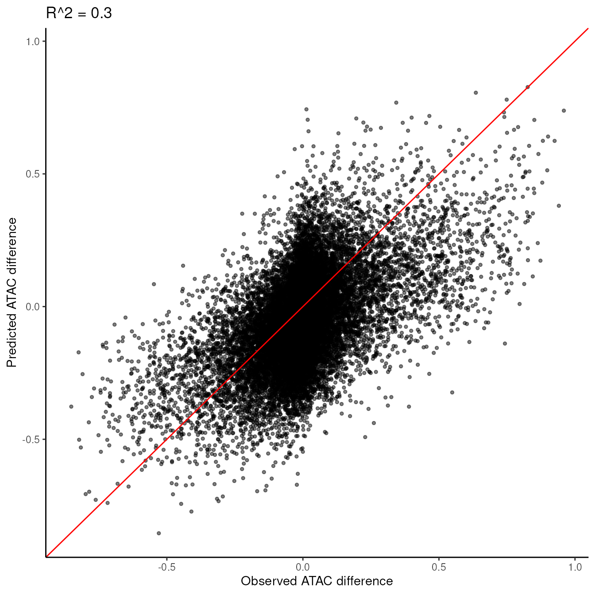

IceQream
iceqream.RmdIntroduction
IceQream (Interpretable Computational Engine for Quantitative Regression of Enhancer ATAC Motifs) is a package for regressing accessibility from DNA sequences. It models TF effective concentrations as latent variables that activate or repress regulatory elements in a nonlinear fashion, with possible contribution from pairwise interactions and synergistic chromosomal domain effects.
This vignette demonstrates how to use IceQream to analyze chromosome accessibility data, focusing on a sample of 5000 loci from a mouse gastrulation trajectory from Epiblast to Early nascent mesoderm. This analysis can help identify key regulatory elements and transcription factors involved in cellular differentiation processes, and understand quantitatively how they contribute to the observed changes in chromatin accessibility.
Setup and Data Preparation
First, let’s load the necessary packages and set up our environment:
Creating a misha genome
We will start by creating a misha database for mm10 genome. If you
already have an mm10 misha database you can skip this part
and load the genome using gsetroot("path/to/mm10").
gdb.create_genome("mm10")
gsetroot("mm10")Downloading Example Data
See below for minimal instructions on how to use IceQream on your own data.
For this tutorial, we’ll use pre-prepared data from a sample of the mouse gastrulation trajectory. Let’s download and load this data:
download.file("https://iceqream.s3.eu-west-1.amazonaws.com/gastrulation-example.tar.gz", "gastrulation-example.tar.gz")
untar("gastrulation-example.tar.gz")
peak_intervals <- readr::read_rds("gastrulation-example/peak_intervals.rds")
atac_scores <- readr::read_rds("gastrulation-example/atac_scores.rds")
additional_features <- readr::read_rds("gastrulation-example/additional_features.rds")
normalization_intervals <- readr::read_tsv("gastrulation-example/gastrulation_intervals.tsv", show_col_types = FALSE)Let’s examine the structure of our input data:
# Peak intervals
head(peak_intervals)
#> # A tibble: 6 × 6
#> chrom start end peak_name const tss_dist
#> <chr> <dbl> <dbl> <chr> <lgl> <dbl>
#> 1 chrX 162915760 162916060 5289_Ctps2_58 FALSE 13589
#> 2 chr14 102806560 102806860 1627_Lmo7_1306 FALSE 8155
#> 3 chr18 74739880 74740180 2390_Myo5b_32 FALSE 6115
#> 4 chr5 98166060 98166360 3695_Fgf5_4 FALSE -14508
#> 5 chr7 26775960 26776260 4228_Nlrp9c_413 FALSE 18818
#> 6 chr10 28636080 28636380 432_Ptprk_786 FALSE -31979
# ATAC scores
head(atac_scores)
#> bin1 bin2 bin3 bin4
#> 5289_Ctps2_58 0.28664573 0.21607409 0.15598945 0.18531872
#> 1627_Lmo7_1306 0.06559805 0.10535270 0.14138811 0.18453988
#> 2390_Myo5b_32 0.01259770 0.01340993 0.02850534 0.03999234
#> 3695_Fgf5_4 0.35906208 0.37084859 0.49515351 0.83097388
#> 4228_Nlrp9c_413 0.75004775 0.64881577 0.41868309 0.32506901
#> 432_Ptprk_786 0.36038245 0.22897889 0.18171044 0.02891232
# Additional features
head(additional_features)
#> cg_cont k4me3 k27me3 k27ac prox_bin1_punc_all
#> 5289_Ctps2_58 0.73947831 0.9540617 5.733111 2.062427 0.5903188
#> 1627_Lmo7_1306 1.88216323 0.9540617 3.094265 2.976209 0.6168619
#> 2390_Myo5b_32 0.61229329 0.9540617 2.149111 1.387341 0.5680226
#> 3695_Fgf5_4 2.68143918 6.3160307 10.000000 1.387341 7.2356519
#> 4228_Nlrp9c_413 0.84718098 0.9540617 2.370734 5.132278 3.4941350
#> 432_Ptprk_786 0.07383385 1.0416816 2.422208 2.062427 0.8716757
#> spatial_ratio TT CT GT AT TC
#> 5289_Ctps2_58 8.701846 3.7500 3.863636 4.827586 5.714286 3.783784
#> 1627_Lmo7_1306 6.416438 3.1250 5.000000 5.172414 4.285714 4.594595
#> 2390_Myo5b_32 5.030319 4.6875 5.681818 5.862069 4.285714 3.513514
#> 3695_Fgf5_4 6.429673 3.7500 6.136364 3.793103 7.500000 6.216216
#> 4228_Nlrp9c_413 8.757560 3.1250 4.318182 10.000000 3.928571 3.783784
#> 432_Ptprk_786 7.862827 3.4375 3.181818 3.448276 3.571429 2.162162
#> CC GC AC TG CG GG
#> 5289_Ctps2_58 4.358974 2.448980 6.551724 4.210526 0.7317073 4.615385
#> 1627_Lmo7_1306 3.076923 3.877551 4.827586 5.789474 2.4390244 4.871795
#> 2390_Myo5b_32 4.102564 4.489796 5.172414 7.631579 0.4878049 4.871795
#> 3695_Fgf5_4 5.641026 5.918367 3.448276 7.368421 3.1707317 4.102564
#> 4228_Nlrp9c_413 4.358974 3.469388 3.448276 10.000000 0.9756098 4.102564
#> 432_Ptprk_786 2.307692 6.326531 5.517241 4.210526 0.0000000 2.051282
#> AG TA CA GA AA
#> 5289_Ctps2_58 6.888889 6.666667 6.578947 6.216216 7.1875
#> 1627_Lmo7_1306 7.333333 3.703704 5.000000 8.378378 5.9375
#> 2390_Myo5b_32 6.444444 4.444444 6.315789 5.405405 4.3750
#> 3695_Fgf5_4 3.111111 2.962963 6.052632 3.783784 2.1875
#> 4228_Nlrp9c_413 4.888889 3.703704 4.736842 4.324324 1.8750
#> 432_Ptprk_786 8.444444 3.703704 10.000000 3.513514 10.0000The peak_intervals dataframe contains the genomic
positions of accessibility peaks. The atac_scores matrix
contains ATAC-seq signal intensities for each peak across different
stages of the trajectory. additional_features includes
extra genomic features for each peak.
Computing Motif Energies
The first step in the IceQream pipeline is to compute motif energies for each transcription factor model and each peak. This process can be computationally intensive, as it calculates energies for over 20,000 motifs from various databases.
motif_energies <- compute_motif_energies(peak_intervals, motif_db, normalization_intervals = normalization_intervals)However, for this tutorial, we’re using pre-computed motif energies for a sample of 5000 loci, which are included in the example data:
motif_energies <- readr::read_rds("gastrulation-example/motif_energies.rds")
print(paste("Motif energy matrix dimensions:", paste(dim(motif_energies), collapse = " x ")))
#> [1] "Motif energy matrix dimensions: 5000 x 21862"This pre-computed matrix contains motif energies for our sample of peaks, allowing us to proceed with the analysis more quickly.
For a less memory and computationally intensive analysis on your own data, you can reduce the number of motifs used in the regression by taking a representative from the SCENIC clusters (1615) instead of all motifs (20,000+). This can be done by:
motif_energies <- compute_motif_energies(peak_intervals, motif_db_scenic_clusters, normalization_intervals = normalization_intervals)Running IceQream
Now we’re ready to run the IceQream regression:
traj_model <- iq_regression(
peak_intervals = peak_intervals,
atac_scores = atac_scores,
motif_energies = motif_energies,
normalize_energies = FALSE,
additional_features = additional_features,
norm_intervals = normalization_intervals,
seed = 60427,
frac_train = 0.8,
max_motif_num = 30
# include_interactions = TRUE # uncomment to include pairwise interactions
)
#> ℹ Seed: 60427
#> ℹ Training on 4000 intervals (80%) and testing on 1000 intervals (20%)
#> → Regressing on train set
#> ℹ Number of peaks: 4000
#> → Extracting sequences...
#> ℹ Calculating correlations between 21862 motif energies and ATAC difference...
#> ℹ Selected 3953 (out of 21862) features with absolute correlation >= 0.05
#> ℹ Running first round of regression, # of features: 3953
#> Warning in eval(family$initialize): non-integer #successes in a binomial glm!
#> Warning: glmnet.fit: algorithm did not converge
#> ℹ Taking 3507 features with beta >= 0.003
#> ℹ Running second round of regression...
#> Warning in eval(family$initialize): non-integer #successes in a binomial glm!
#> Warning in eval(family$initialize): glmnet.fit: algorithm did not converge
#> ℹ Clustering 3483 features into 30 clusters...
#> ℹ Choosing top 30 features clusters
#> ℹ Features left: 3483
#> ℹ Learning a model for each motif cluster...
#> ℹ Infering energies...
#> ℹ Running final regression, number of features: 208
#> Warning in eval(family$initialize): non-integer #successes in a binomial glm!
#> Warning in eval(family$initialize): glmnet.fit: algorithm did not converge
#> ✔ Finished running model. Number of non-zero coefficients: 206 (out of 208). R^2: 0.504102930107174
#> → Filtering the model
#> Warning in eval(family$initialize): non-integer #successes in a binomial glm!
#> Warning in eval(family$initialize): glmnet.fit: algorithm did not converge
#> ℹ Using 400 samples for filtering
#> ℹ R^2 of the full model: 0.238370175596476
#> ℹ Filtering features with R^2 < 5e-04 and bits < 1.75
#> Warning in eval(family$initialize): non-integer #successes in a binomial glm!
#> Warning in eval(family$initialize): glmnet.fit: algorithm did not converge
#> → R^2 added by SCENIC.neph__UW.Motif.0639 (---CCATCTGG----): 0.00378604882167424. Bits: 9.28904682564132
#> Warning in eval(family$initialize): non-integer #successes in a binomial glm!
#> Warning in eval(family$initialize): glmnet.fit: algorithm did not converge
#> → R^2 added by SCENIC.kznf__ZNF18_Imbeault2017_OM_RCADE (-----TTCACA----): -0.0144763134940129. Bits: 4.25094412603532
#> Warning in eval(family$initialize): non-integer #successes in a binomial glm!
#> Warning in eval(family$initialize): glmnet.fit: algorithm did not converge
#> → R^2 added by SCENIC.homer__CYHATAAAAN_Hoxa13 (---AT-AAA------): 0.0110871180973321. Bits: 5.54560688574184
#> Warning in eval(family$initialize): non-integer #successes in a binomial glm!
#> Warning in eval(family$initialize): glmnet.fit: algorithm did not converge
#> → R^2 added by JASPAR.GATA2 (------GATA-----): 0.065265031677198. Bits: 5.44891078500744
#> Warning in eval(family$initialize): non-integer #successes in a binomial glm!
#> Warning in eval(family$initialize): glmnet.fit: algorithm did not converge
#> → R^2 added by SCENIC.taipale_cyt_meth__POU2F2_NTMATTATGCAN_eDBD (-----TTTCAAA---): 0.00392631874607063. Bits: 4.57062911859363
#> Warning in eval(family$initialize): non-integer #successes in a binomial glm!
#> Warning in eval(family$initialize): glmnet.fit: algorithm did not converge
#> → R^2 added by JASPAR.TBX2 (----A-GTGT-----): 0.0175968075454803. Bits: 6.40605792077357
#> Warning in eval(family$initialize): non-integer #successes in a binomial glm!
#> Warning in eval(family$initialize): glmnet.fit: algorithm did not converge
#> → R^2 added by SCENIC.taipale_cyt_meth__POU2F3_NTATGCWAATN_eDBD_repr (----ATTAGCAT---): 0.012103849800238. Bits: 5.13448870786773
#> Warning in eval(family$initialize): non-integer #successes in a binomial glm!
#> Warning in eval(family$initialize): glmnet.fit: algorithm did not converge
#> → R^2 added by SCENIC.cisbp__M01365 (-------G-TTA---): 0.00327954830871935. Bits: 2.44740355762059
#> Warning in eval(family$initialize): non-integer #successes in a binomial glm!
#> Warning in eval(family$initialize): glmnet.fit: algorithm did not converge
#> → R^2 added by SCENIC.predrem__nrMotif1859 (---ATGAATATT---): -0.00866571098183802. Bits: 9.2955897671087
#> Warning in eval(family$initialize): non-integer #successes in a binomial glm!
#> Warning in eval(family$initialize): glmnet.fit: algorithm did not converge
#> → R^2 added by SCENIC.neph__UW.Motif.0048 (---GCAGCTGA----): 0.00240690546121999. Bits: 10.9642663810546
#> Warning in eval(family$initialize): non-integer #successes in a binomial glm!
#> Warning in eval(family$initialize): glmnet.fit: algorithm did not converge
#> → R^2 added by JOLMA.NEUROG2_di_full (-----CAG-TG----): -0.000894724798327695. Bits: 3.34642492170536
#> Warning in eval(family$initialize): non-integer #successes in a binomial glm!
#> Warning in eval(family$initialize): glmnet.fit: algorithm did not converge
#> → R^2 added by HOMER.Tcf3 (---TGATAAGT----): -0.00278059970737599. Bits: 12.4501112150689
#> Warning in eval(family$initialize): non-integer #successes in a binomial glm!
#> Warning in eval(family$initialize): glmnet.fit: algorithm did not converge
#> → R^2 added by SCENIC.cisbp__M01881 (------A--------): -0.00162207144600635. Bits: 0.926364215932642
#> Warning in eval(family$initialize): non-integer #successes in a binomial glm!
#> Warning in eval(family$initialize): glmnet.fit: algorithm did not converge
#> → R^2 added by SCENIC.swissregulon__hs__ESR2 (-------ACGTC---): 0.000157166828402638. Bits: 2.57384121825968
#> Warning in eval(family$initialize): non-integer #successes in a binomial glm!
#> Warning in eval(family$initialize): glmnet.fit: algorithm did not converge
#> → R^2 added by SCENIC.cisbp__M00066 (---AGGAGCT-----): -0.000748142001259389. Bits: 9.34292342747554
#> Warning in eval(family$initialize): non-integer #successes in a binomial glm!
#> Warning in eval(family$initialize): glmnet.fit: algorithm did not converge
#> → R^2 added by SCENIC.kznf__CTCF_ENCODE.57_ChIP-seq (----ATATAAAT---): 0.00141914385261038. Bits: 7.2184217790462
#> Warning in eval(family$initialize): non-integer #successes in a binomial glm!
#> Warning in eval(family$initialize): glmnet.fit: algorithm did not converge
#> → R^2 added by SCENIC.taipale_cyt_meth__LHX4_NTAATTAN_FL_repr (------G-TAATT--): 0.0132007022932578. Bits: 4.17979807011643
#> Warning in eval(family$initialize): non-integer #successes in a binomial glm!
#> Warning in eval(family$initialize): glmnet.fit: algorithm did not converge
#> → R^2 added by SCENIC.transfac_public__M00410 (----ACAATA-----): 0.0132143085261674. Bits: 6.62394103135846
#> Warning in eval(family$initialize): non-integer #successes in a binomial glm!
#> Warning in eval(family$initialize): glmnet.fit: algorithm did not converge
#> → R^2 added by SCENIC.neph__UW.Motif.0112 (---CAAATGG-----): 0.0149631410069025. Bits: 3.39227790277731
#> Warning in eval(family$initialize): non-integer #successes in a binomial glm!
#> Warning in eval(family$initialize): glmnet.fit: algorithm did not converge
#> → R^2 added by SCENIC.cisbp__M00002 (---CCA---------): -0.00679782539395204. Bits: 1.30852444291824
#> Warning in eval(family$initialize): non-integer #successes in a binomial glm!
#> Warning in eval(family$initialize): glmnet.fit: algorithm did not converge
#> → R^2 added by SCENIC.flyfactorsurvey__crp_SANGER_10_FBgn0001994 (---GCAGCTGGG---): 0.00489064756990595. Bits: 11.8803107626121
#> Warning in eval(family$initialize): non-integer #successes in a binomial glm!
#> Warning in eval(family$initialize): glmnet.fit: algorithm did not converge
#> → R^2 added by HOCOMOCO.ZIC1_MOUSE.H11MO.0.B (------CACCC----): -0.0118398894597708. Bits: 2.99369702960344
#> Warning in eval(family$initialize): non-integer #successes in a binomial glm!
#> Warning in eval(family$initialize): glmnet.fit: algorithm did not converge
#> → R^2 added by HOCOMOCO.NF2L1_MOUSE.H11MO.0.C (---GTGA-G------): -0.00187417158258363. Bits: 3.22183764332727
#> Warning in eval(family$initialize): non-integer #successes in a binomial glm!
#> Warning in eval(family$initialize): glmnet.fit: algorithm did not converge
#> → R^2 added by SCENIC.jaspar__MA0774.1 (------ACGTCA---): -0.0032125885938345. Bits: 3.11211653328523
#> Warning in eval(family$initialize): non-integer #successes in a binomial glm!
#> Warning in eval(family$initialize): glmnet.fit: algorithm did not converge
#> → R^2 added by SCENIC.cisbp__M00006 (-----CAGGTA----): 0.003081847893081. Bits: 8.15781784873317
#> Warning in eval(family$initialize): non-integer #successes in a binomial glm!
#> Warning in eval(family$initialize): glmnet.fit: algorithm did not converge
#> → R^2 added by SCENIC.taipale_cyt_meth__TCF12_NCACSTGN_eDBD_meth (-----A-CAGGTG--): 0.00226608175082568. Bits: 5.83757943988829
#> Warning in eval(family$initialize): non-integer #successes in a binomial glm!
#> Warning in eval(family$initialize): glmnet.fit: algorithm did not converge
#> → R^2 added by SCENIC.predrem__nrMotif1099 (----TG-GAAC----): -0.00366638650371454. Bits: 2.97982954882866
#> Warning in eval(family$initialize): non-integer #successes in a binomial glm!
#> Warning in eval(family$initialize): glmnet.fit: algorithm did not converge
#> → R^2 added by SCENIC.flyfactorsurvey__dl_NBT_FBgn0000462 (----AAGAATCC---): -0.0076247552951807. Bits: 9.76604266575039
#> Warning in eval(family$initialize): non-integer #successes in a binomial glm!
#> Warning in eval(family$initialize): glmnet.fit: algorithm did not converge
#> → R^2 added by SCENIC.cisbp__M02099 (----TAATCAG----): 0.00562343995343306. Bits: 9.05193244282973
#> Warning in eval(family$initialize): non-integer #successes in a binomial glm!
#> Warning in eval(family$initialize): glmnet.fit: algorithm did not converge
#> → R^2 added by SCENIC.scertf__morozov.MGA1 (----GAAACCTG---): -0.00813532036403214. Bits: 12.1616605716912
#> ℹ Removing the following features with bits < 1.75: "SCENIC.cisbp__M01881" and "SCENIC.cisbp__M00002"
#> ℹ Trying to remove the following features with R^2 < 5e-04: "SCENIC.kznf__ZNF18_Imbeault2017_OM_RCADE", "SCENIC.predrem__nrMotif1859", "JOLMA.NEUROG2_di_full", "HOMER.Tcf3", "SCENIC.cisbp__M01881", "SCENIC.swissregulon__hs__ESR2", "SCENIC.cisbp__M00066", "SCENIC.cisbp__M00002", "HOCOMOCO.ZIC1_MOUSE.H11MO.0.B", "HOCOMOCO.NF2L1_MOUSE.H11MO.0.C", "SCENIC.jaspar__MA0774.1", "SCENIC.predrem__nrMotif1099", "SCENIC.flyfactorsurvey__dl_NBT_FBgn0000462", and "SCENIC.scertf__morozov.MGA1"
#> Warning in eval(family$initialize): non-integer #successes in a binomial glm!
#> Warning in eval(family$initialize): glmnet.fit: algorithm did not converge
#> Warning in eval(family$initialize): non-integer #successes in a binomial glm!
#> Warning: glmnet.fit: algorithm did not converge
#> → Removing "HOCOMOCO.ZIC1_MOUSE.H11MO.0.B" changed the R^2 by -0.00996969852365565
#> Warning in eval(family$initialize): non-integer #successes in a binomial glm!
#> Warning in eval(family$initialize): glmnet.fit: algorithm did not converge
#> → Removing "SCENIC.predrem__nrMotif1859" changed the R^2 by -0.00956839684433264
#> Warning in eval(family$initialize): non-integer #successes in a binomial glm!
#> Warning in eval(family$initialize): glmnet.fit: algorithm did not converge
#> → Removing "SCENIC.scertf__morozov.MGA1" changed the R^2 by -0.000957497556137998
#> Warning in eval(family$initialize): non-integer #successes in a binomial glm!
#> Warning in eval(family$initialize): glmnet.fit: algorithm did not converge
#> → Removing "SCENIC.flyfactorsurvey__dl_NBT_FBgn0000462" changed the R^2 by -0.00260161555519067
#> Warning in eval(family$initialize): non-integer #successes in a binomial glm!
#> Warning in eval(family$initialize): glmnet.fit: algorithm did not converge
#> → Removing "SCENIC.predrem__nrMotif1099" changed the R^2 by -0.00428513266709052
#> Warning in eval(family$initialize): non-integer #successes in a binomial glm!
#> Warning in eval(family$initialize): glmnet.fit: algorithm did not converge
#> → Removing "SCENIC.jaspar__MA0774.1" changed the R^2 by -0.00079131624543366
#> Warning in eval(family$initialize): non-integer #successes in a binomial glm!
#> Warning in eval(family$initialize): glmnet.fit: algorithm did not converge
#> → Removing "HOMER.Tcf3" changed the R^2 by -0.00514013425762633
#> Warning in eval(family$initialize): non-integer #successes in a binomial glm!
#> Warning in eval(family$initialize): glmnet.fit: algorithm did not converge
#> → Removing "HOCOMOCO.NF2L1_MOUSE.H11MO.0.C" changed the R^2 by -0.00164186548034773
#> Warning in eval(family$initialize): non-integer #successes in a binomial glm!
#> Warning in eval(family$initialize): glmnet.fit: algorithm did not converge
#> → Removing "JOLMA.NEUROG2_di_full" changed the R^2 by -0.000847169508890577
#> Warning in eval(family$initialize): non-integer #successes in a binomial glm!
#> Warning in eval(family$initialize): glmnet.fit: algorithm did not converge
#> → Removing "SCENIC.cisbp__M00066" changed the R^2 by -0.000605448346684911
#> Warning in eval(family$initialize): non-integer #successes in a binomial glm!
#> Warning in eval(family$initialize): glmnet.fit: algorithm did not converge
#> → Not removing "SCENIC.swissregulon__hs__ESR2" (changed the R^2 by only 0.000958425632749671).
#> ℹ Removed 2 features with bits < 1.75
#> ℹ Removed 11 features with R^2 < 5e-04
#> Warning in eval(family$initialize): non-integer #successes in a binomial glm!
#> Warning in eval(family$initialize): glmnet.fit: algorithm did not converge
#> ✔ After filtering: Number of non-zero coefficients: 153 (out of 156). R^2: 0.485425129884941. Number of models: 17
#> → Infering trajectory motifs on the test set
#> ℹ Extracting sequences...
#> ℹ Computing motif energies for 1000 intervals
#> ℹ Inferring the model on 1000 intervals
#> ✔ Finished IQ regression.
#>
#> Number of motifs: 17
#> R^2 train: 0.485
#> R^2 test: 0.425
#>
#> Run `plot_traj_model_report(traj_model)` to visualize the model features
#> Run `plot_prediction_scatter(traj_model)` to visualize the model predictionsLet’s examine the output:
print(traj_model)
#> <TrajectoryModel> with 17 motifs and 22 additional features
#>
#> Slots include:
#> • @model: A GLM model object. Number of non-zero coefficients: 153
#> • @motif_models: A named list of motif models. Each element contains PSSM and
#> spatial model (17 models: "SCENIC.neph__UW.Motif.0639",
#> "SCENIC.homer__CYHATAAAAN_Hoxa13", "JASPAR.GATA2",
#> "SCENIC.taipale_cyt_meth__POU2F2_NTMATTATGCAN_eDBD", "JASPAR.TBX2",
#> "SCENIC.taipale_cyt_meth__POU2F3_NTATGCWAATN_eDBD_repr",
#> "SCENIC.cisbp__M01365", "SCENIC.neph__UW.Motif.0048",
#> "SCENIC.swissregulon__hs__ESR2", "SCENIC.kznf__CTCF_ENCODE.57_ChIP-seq",
#> "SCENIC.taipale_cyt_meth__LHX4_NTAATTAN_FL_repr",
#> "SCENIC.transfac_public__M00410", "SCENIC.neph__UW.Motif.0112",
#> "SCENIC.flyfactorsurvey__crp_SANGER_10_FBgn0001994", "SCENIC.cisbp__M00006",
#> "SCENIC.taipale_cyt_meth__TCF12_NCACSTGN_eDBD_meth", and
#> "SCENIC.cisbp__M02099")
#> • @additional_features: A data frame of additional features (22 features)
#> • @coefs: A data frame of coefficients (39 elements)
#> • @model_features: A matrix of the model features (logistic functions of the
#> motif models energies, dimensions: 5000x156)
#> • @normalized_energies: A matrix of normalized energies of the model features
#> (dimensions: 5000x17)
#> • @type: A vector the length of the number of peaks, indicating whether each
#> peak is a training ('train') or a prediction peak ('test')
#> • @diff_score: A numeric value representing the difference score the model was
#> trained on (5000 elements)
#> • @predicted_diff_score: A numeric value representing the predicted difference
#> score
#> • @initial_prego_models: A list of prego models used in the initial phase of
#> the algorithm (0 models)
#> • @peak_intervals: A data frame containing the peak intervals (5000 elements)
#> • @normalization_intervals: A data frame containing the intervals used for
#> energy normalization (129963 elements)
#> • @features_r2: A numeric vector of the added R^2 values for each feature (17
#> elements)
#> • @params: A list of parameters used for training (including:
#> "energy_norm_quantile", "norm_energy_max", "min_energy", "alpha", "lambda",
#> "peaks_size", "spat_num_bins", "spat_bin_size", "distilled_features",
#> "n_clust_factor", "include_interactions", "interaction_threshold", "seed",
#> "features_bits", "r2_threshold", "bits_threshold", and "stats")
#>
#> R^2 train: 0.485
#> R^2 test: 0.425The TrajectoryModel object contains components such as
the regression model, motif models, and predicted accessibility
scores.
Visualizing Results
Let’s start with a scatter plot of observed vs. predicted accessibility changes:
plot_prediction_scatter(traj_model)
This plot shows how well our model predicts accessibility changes. Points closer to the diagonal line indicate better predictions. We measure the accuracy of the model using the coefficient of determination (R^2).
Model report
Next, let’s look at the model report, which provides detailed information about the motifs and their contributions:
plot_traj_model_report(traj_model, filename = "model_report.pdf")
knitr::include_graphics("model_report.pdf")Interpreting the trajectory model report
The model report provides several key pieces of information (from left to right):
- Motif logos show the inferred sequence preferences for each transcription factor model.
- Response curves show how the accessibility changes as a function of binding energy for each TF.
- Barplots show the coefficient of each non-linear term of every motif in the model.
- Spatial model curves show the parameters of the spatial model for each TF. The R² values indicate the predictive power each TF adds to the model.
- Spatial curves show the frequency of each TF binding site along the peaks from the bottom 10% (blue) and top 10% (red) of the differential accessibility (dAP) distribution.
- Boxplots show the distribution of ATAC differences (dAP, y-axis) for bins of binding energy (x-axis) for each TF.
Renaming the motif models
You can rename the motif models to more informative names, either
manually using rename_motif_models or automatically using
match_traj_model_motif_names:
names_map <- match_traj_model_motif_names(traj_model)
#> ℹ Matching motif names, note that this might take a while.
#> → Matching SCENIC.neph__UW.Motif.0639
#> → Matched with "HOMER.Atoh1", PSSM correlation = 0.736720073685962
#> → Matching SCENIC.homer__CYHATAAAAN_Hoxa13
#> → Matched with "HOMER.Oct2", PSSM correlation = 0.619595157729485
#> → Matching JASPAR.GATA2
#> → Matched with "HOMER.GATA3_2", PSSM correlation = 0.907315746824153
#> → Matching SCENIC.taipale_cyt_meth__POU2F2_NTMATTATGCAN_eDBD
#> → Matched with "HOMER.CHR", PSSM correlation = 0.692150573451878
#> → Matching JASPAR.TBX2
#> → Matched with "HOMER.Tbet", PSSM correlation = 0.800471338953668
#> → Matching SCENIC.taipale_cyt_meth__POU2F3_NTATGCWAATN_eDBD_repr
#> → Matched with "HOMER.Oct4", PSSM correlation = 0.843190694181618
#> → Matching SCENIC.cisbp__M01365
#> → Matched with "HOMER.GSC", PSSM correlation = 0.766281738617661
#> → Matching SCENIC.neph__UW.Motif.0048
#> → Matched with "HOMER.E2A", PSSM correlation = 0.789294147619328
#> → Matching SCENIC.swissregulon__hs__ESR2
#> → Matched with "HOMER.CRE", PSSM correlation = 0.776391188112696
#> → Matching SCENIC.kznf__CTCF_ENCODE.57_ChIP-seq
#> → Matched with "HOMER.SeqBias_A", PSSM correlation = 0.686668552652006
#> → Matching SCENIC.taipale_cyt_meth__LHX4_NTAATTAN_FL_repr
#> → Matched with "HOMER.Isl1", PSSM correlation = 0.805941998465617
#> → Matching SCENIC.transfac_public__M00410
#> → Matched with "HOMER.Isl1", PSSM correlation = 0.617418690618359
#> → Matching SCENIC.neph__UW.Motif.0112
#> → Matched with "HOMER.YY1", PSSM correlation = 0.674753584275048
#> → Matching SCENIC.flyfactorsurvey__crp_SANGER_10_FBgn0001994
#> → Matched with "HOMER.E2A", PSSM correlation = 0.889343607975713
#> → Matching SCENIC.cisbp__M00006
#> → Matched with "HOMER.HIF2a", PSSM correlation = 0.663536428345927
#> → Matching SCENIC.taipale_cyt_meth__TCF12_NCACSTGN_eDBD_meth
#> → Matched with "HOMER.MyoG", PSSM correlation = 0.717153800501938
#> → Matching SCENIC.cisbp__M02099
#> → Matched with "HOMER.Lhx3", PSSM correlation = 0.784285359744131
names_map
#> JASPAR.GATA2
#> "GATA3_2"
#> JASPAR.TBX2
#> "Tbet"
#> SCENIC.cisbp__M00006
#> "HIF2a"
#> SCENIC.cisbp__M01365
#> "GSC"
#> SCENIC.cisbp__M02099
#> "Lhx3"
#> SCENIC.flyfactorsurvey__crp_SANGER_10_FBgn0001994
#> "E2A"
#> SCENIC.homer__CYHATAAAAN_Hoxa13
#> "Oct2"
#> SCENIC.kznf__CTCF_ENCODE.57_ChIP-seq
#> "SeqBias_A"
#> SCENIC.neph__UW.Motif.0048
#> "E2A.2"
#> SCENIC.neph__UW.Motif.0112
#> "YY1"
#> SCENIC.neph__UW.Motif.0639
#> "Atoh1"
#> SCENIC.swissregulon__hs__ESR2
#> "CRE"
#> SCENIC.taipale_cyt_meth__LHX4_NTAATTAN_FL_repr
#> "Isl1"
#> SCENIC.taipale_cyt_meth__POU2F2_NTMATTATGCAN_eDBD
#> "CHR"
#> SCENIC.taipale_cyt_meth__POU2F3_NTATGCWAATN_eDBD_repr
#> "Oct4"
#> SCENIC.taipale_cyt_meth__TCF12_NCACSTGN_eDBD_meth
#> "MyoG"
#> SCENIC.transfac_public__M00410
#> "Isl1.2"
traj_model <- rename_motif_models(traj_model, names_map)
#> Warning in eval(family$initialize): non-integer #successes in a binomial glm!
#> Warning: glmnet.fit: algorithm did not convergeExporting the model
You can export the minimal model representation to a list of PBM in order to use infer its parameters on new data:
pbm_list <- traj_model_to_pbm_list(traj_model)
#> ℹ Computing motif energies for 17 motifs on 129963 normalization intervals
pbm_list
#> $Atoh1
#> a <PBM> object named "Atoh1" with 15 positions (`@pssm`)
#> Energy normalization max = -18.8351519296345 (`@max_energy`)
#> Spatial distribution with 149 spatial factors, from position 1 to 299 (298 bp)
#> (`@spat`)
#> Includes a model with 4 coefficients ("high-energy", "higher-energy",
#> "low-energy", and "sigmoid") (`@coefs`)
#>
#> $Oct2
#> a <PBM> object named "Oct2" with 15 positions (`@pssm`)
#> Energy normalization max = -23.0517014877026 (`@max_energy`)
#> Spatial distribution with 149 spatial factors, from position 1 to 299 (298 bp)
#> (`@spat`)
#> Includes a model with 4 coefficients ("high-energy", "higher-energy",
#> "low-energy", and "sigmoid") (`@coefs`)
#>
#> $GATA3_2
#> a <PBM> object named "GATA3_2" with 15 positions (`@pssm`)
#> Energy normalization max = -24.9224599707279 (`@max_energy`)
#> Spatial distribution with 149 spatial factors, from position 1 to 299 (298 bp)
#> (`@spat`)
#> Includes a model with 4 coefficients ("high-energy", "higher-energy",
#> "low-energy", and "sigmoid") (`@coefs`)
#>
#> $CHR
#> a <PBM> object named "CHR" with 15 positions (`@pssm`)
#> Energy normalization max = -23.0280119094421 (`@max_energy`)
#> Spatial distribution with 149 spatial factors, from position 1 to 299 (298 bp)
#> (`@spat`)
#> Includes a model with 4 coefficients ("high-energy", "higher-energy",
#> "low-energy", and "sigmoid") (`@coefs`)
#>
#> $Tbet
#> a <PBM> object named "Tbet" with 15 positions (`@pssm`)
#> Energy normalization max = -21.4985798263476 (`@max_energy`)
#> Spatial distribution with 149 spatial factors, from position 1 to 299 (298 bp)
#> (`@spat`)
#> Includes a model with 4 coefficients ("high-energy", "higher-energy",
#> "low-energy", and "sigmoid") (`@coefs`)
#>
#> $Oct4
#> a <PBM> object named "Oct4" with 15 positions (`@pssm`)
#> Energy normalization max = -22.5973687275429 (`@max_energy`)
#> Spatial distribution with 149 spatial factors, from position 1 to 299 (298 bp)
#> (`@spat`)
#> Includes a model with 4 coefficients ("high-energy", "higher-energy",
#> "low-energy", and "sigmoid") (`@coefs`)
#>
#> $GSC
#> a <PBM> object named "GSC" with 15 positions (`@pssm`)
#> Energy normalization max = -26.7370915716788 (`@max_energy`)
#> Spatial distribution with 149 spatial factors, from position 1 to 299 (298 bp)
#> (`@spat`)
#> Includes a model with 4 coefficients ("high-energy", "higher-energy",
#> "low-energy", and "sigmoid") (`@coefs`)
#>
#> $E2A.2
#> a <PBM> object named "E2A.2" with 15 positions (`@pssm`)
#> Energy normalization max = -20.1042449310201 (`@max_energy`)
#> Spatial distribution with 149 spatial factors, from position 1 to 299 (298 bp)
#> (`@spat`)
#> Includes a model with 4 coefficients ("high-energy", "higher-energy",
#> "low-energy", and "sigmoid") (`@coefs`)
#>
#> $CRE
#> a <PBM> object named "CRE" with 15 positions (`@pssm`)
#> Energy normalization max = -26.3160780423666 (`@max_energy`)
#> Spatial distribution with 149 spatial factors, from position 1 to 299 (298 bp)
#> (`@spat`)
#> Includes a model with 4 coefficients ("high-energy", "higher-energy",
#> "low-energy", and "sigmoid") (`@coefs`)
#>
#> $SeqBias_A
#> a <PBM> object named "SeqBias_A" with 15 positions (`@pssm`)
#> Energy normalization max = -20.4634795404199 (`@max_energy`)
#> Spatial distribution with 149 spatial factors, from position 1 to 299 (298 bp)
#> (`@spat`)
#> Includes a model with 4 coefficients ("high-energy", "higher-energy",
#> "low-energy", and "sigmoid") (`@coefs`)
#>
#> $Isl1
#> a <PBM> object named "Isl1" with 15 positions (`@pssm`)
#> Energy normalization max = -24.9870979302282 (`@max_energy`)
#> Spatial distribution with 149 spatial factors, from position 1 to 299 (298 bp)
#> (`@spat`)
#> Includes a model with 4 coefficients ("high-energy", "higher-energy",
#> "low-energy", and "sigmoid") (`@coefs`)
#>
#> $Isl1.2
#> a <PBM> object named "Isl1.2" with 15 positions (`@pssm`)
#> Energy normalization max = -23.2487220608086 (`@max_energy`)
#> Spatial distribution with 149 spatial factors, from position 1 to 299 (298 bp)
#> (`@spat`)
#> Includes a model with 4 coefficients ("high-energy", "higher-energy",
#> "low-energy", and "sigmoid") (`@coefs`)
#>
#> $YY1
#> a <PBM> object named "YY1" with 15 positions (`@pssm`)
#> Energy normalization max = -25.3763318173833 (`@max_energy`)
#> Spatial distribution with 149 spatial factors, from position 1 to 299 (298 bp)
#> (`@spat`)
#> Includes a model with 4 coefficients ("high-energy", "higher-energy",
#> "low-energy", and "sigmoid") (`@coefs`)
#>
#> $E2A
#> a <PBM> object named "E2A" with 15 positions (`@pssm`)
#> Energy normalization max = -19.1837456284601 (`@max_energy`)
#> Spatial distribution with 149 spatial factors, from position 1 to 299 (298 bp)
#> (`@spat`)
#> Includes a model with 4 coefficients ("high-energy", "higher-energy",
#> "low-energy", and "sigmoid") (`@coefs`)
#>
#> $HIF2a
#> a <PBM> object named "HIF2a" with 15 positions (`@pssm`)
#> Energy normalization max = -22.9550169689711 (`@max_energy`)
#> Spatial distribution with 149 spatial factors, from position 1 to 299 (298 bp)
#> (`@spat`)
#> Includes a model with 4 coefficients ("high-energy", "higher-energy",
#> "low-energy", and "sigmoid") (`@coefs`)
#>
#> $MyoG
#> a <PBM> object named "MyoG" with 15 positions (`@pssm`)
#> Energy normalization max = -23.457575040294 (`@max_energy`)
#> Spatial distribution with 149 spatial factors, from position 1 to 299 (298 bp)
#> (`@spat`)
#> Includes a model with 4 coefficients ("high-energy", "higher-energy",
#> "low-energy", and "sigmoid") (`@coefs`)
#>
#> $Lhx3
#> a <PBM> object named "Lhx3" with 15 positions (`@pssm`)
#> Energy normalization max = -22.3053889656589 (`@max_energy`)
#> Spatial distribution with 149 spatial factors, from position 1 to 299 (298 bp)
#> (`@spat`)
#> Includes a model with 4 coefficients ("high-energy", "higher-energy",
#> "low-energy", and "sigmoid") (`@coefs`)You can now use pbm_list.compute or
pbm_list.gextract:
new_intervals <- data.frame(
chrom = rep("chr1", 3),
start = c(3671720, 4412460, 4493400),
end = c(3672020, 4412760, 4493700)
)
pbm_list.gextract(pbm_list, new_intervals)
#> ℹ Computing energies for 17 PBMs on 3 sequences
#> chrom start end Atoh1 Oct2 GATA3_2 CHR Tbet
#> 1 chr1 3671720 3672020 0.1301103 0.0000000 3.379666 0.000000 0.0000000
#> 2 chr1 4412460 4412760 0.0000000 4.4105521 5.355364 4.687533 0.4307005
#> 3 chr1 4493400 4493700 0.0000000 0.8856153 4.203697 2.538823 0.0000000
#> Oct4 GSC E2A.2 CRE SeqBias_A Isl1 Isl1.2 YY1
#> 1 0.000000 3.685317 1.863914 3.709008 0 2.816785 0 3.076055
#> 2 2.187434 4.736536 0.000000 3.068705 0 4.533499 0 4.900780
#> 3 0.000000 5.104523 0.000000 2.157962 0 4.548500 0 4.049271
#> E2A HIF2a MyoG Lhx3
#> 1 4.505734 0.0000000 2.2515349 0
#> 2 0.000000 0.3025292 1.9239777 0
#> 3 0.000000 0.0000000 0.9961284 0
# directly compute on sequences
seqs <- prego::intervals_to_seq(new_intervals)
seqs
#> [1] "TTCCTCTCCTCCCCTCGCGCGCGCTCCCTCCTCCCGCAGCCTCTCCTCCACCAGCTGACTCCGAGGGAGAGGATGACCTCATCCCTTCCCTTCCAGCTGCCGCCGCTCCCACCCCGGCTGGGGAGGGGCGAGAAGGAGGGCCCGGAGGAGGGGCTGGGATTGAGGGGAGCGGCGGGTGGGGGTGCCTGGCTGGCCAGTGCTGGACGCGGAGGGCAACAGCACGGCAATCGGAGGCCCAGTCCAGGCTCGTGGGATAGCGAAGAGCGTTGAGTGGATTTCCTCGAAGCTGGGGGGATGGGA"
#> [2] "ATCTCTGGAAAGACTTGTGCTGATCTCTCTCTGCCCCTTCCTTGATTCACATCTCAAGGGACCGAGAAGGGAGGGAAAACACCAGTCCAGTATTTCCTATCAGTTCAGCGGGGCAGGAACCGGGAGCTTTTCCACAGGGCTGAGCCTGGCCCTCCACTGAGCAGTGTCTGCATTCCAAGGCTCCAGCCTGTCACCACCCTTCCAATCCCTTTGAAGCTGGGCAAAAGGCCTGCCAACAAGCACCAAACTTGAGAGCTCCTCTGCCAGCCCTGGGAGGGGCTGTTTCCTGCCTGCTTTTCG"
#> [3] "GCTCATGGCTCTCCAGACCGACCCCGAGCTCTGCTATGGCCACGGGACACGCCGCTTCCCCCGACCCTGAGGCAGGGATCGGAAGCTAGCCTGGAGATGCCCAGAGGAACTCGTAAAGCTGAGCGGGTGCTACCCTCCCGCTGCTCTCCTGGTAGACCTAACCCTTCGCCTAATCCGCGCTGGAGATCTACCCAGTGACACTGCGGGTGTCCCCCCGGGCCGCGGGGCCCTTTTCTTTATGGACGCGGCCAATGGCGAGGCGGGGGCGGACCGGACCCTAGTCCTTAGGCCCCCGCCCAG"
pbm_list.compute(pbm_list, seqs)
#> ℹ Computing energies for 17 PBMs on 3 sequences
#> Atoh1 Oct2 GATA3_2 CHR Tbet Oct4 GSC E2A.2
#> [1,] 0.1301103 0.0000000 3.379666 0.000000 0.0000000 0.000000 3.685317 1.863914
#> [2,] 0.0000000 4.4105521 5.355364 4.687533 0.4307005 2.187434 4.736536 0.000000
#> [3,] 0.0000000 0.8856153 4.203697 2.538823 0.0000000 0.000000 5.104523 0.000000
#> CRE SeqBias_A Isl1 Isl1.2 YY1 E2A HIF2a MyoG
#> [1,] 3.709008 0 2.816785 0 3.076055 4.505734 0.0000000 2.2515349
#> [2,] 3.068705 0 4.533499 0 4.900780 0.000000 0.3025292 1.9239777
#> [3,] 2.157962 0 4.548500 0 4.049271 0.000000 0.0000000 0.9961284
#> Lhx3
#> [1,] 0
#> [2,] 0
#> [3,] 0Running IceQream on your own data
To run IceQream on your own data, you will need to provide the following inputs:
- Genomic positions of peaks (as a dataframe with columns
chrom,start,end,peak_name), optionally it can have aconstcolumn indicating constitutive loci. - ATAC scores (as a matrix with rows corresponding to peaks and columns corresponding to bins).
- (Optional) Additional features (as a data frame with rows corresponding to peaks and columns corresponding to features).
You can then follow the steps outlined in this vignette to compute motif energies, run the regression and analyze the results.